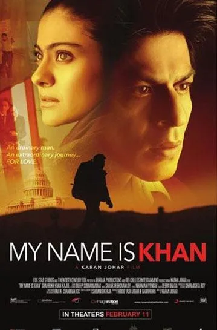
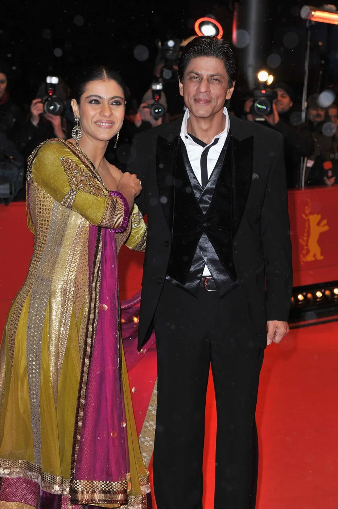

Part II · The First Digital Empire Starts With…, 2000 to 2013 · 11 of 57
Chapter 9 · My Name Is Khan, 2010: the star becomes the platform
January 2010: the line reopens. Ten years after SRKWorld he opened a direct line to his audience again, and this time he did not have to build it. He joined Twitter as @iamsrk at the start of January 2010. His first tweet began: “Being extremely shy I never thought I would be here.” Karan Johar had talked him into it. Five years later the account had 10.7 million followers. (Fact. IBTimes; sources give 2 or 3 January for the first tweet) The shy man who had built a website in 2000 now had a microphone in every fan’s pocket, and he held it himself. (Analysis)

My Name Is Khan (2010): the poster. (Image: Final Thesis archive)
The first film he sold through it was the most personal of his career: Rizwan Khan, a Muslim man with Asperger’s syndrome, crosses post-9/11 America to tell its president one sentence: “My name is Khan, and I am not a terrorist.” It could have stayed a festival title. Its campaign made it a global release. (Analysis)
The deal. On 7 August 2009 Red Chillies signed a worldwide distribution deal with Fox Star Studios, reported at ₹100 crore; Fox did not disclose the figure. Fox Star distributed in India, Fox Searchlight in the United States and 20th Century Fox elsewhere. (Fact. Wikipedia: My Name Is Khan; Filmibeat, 2 Sept 2009) A week later came Newark. Six months before the release of a film whose hero is stopped and questioned because of his name, its star was stopped and questioned because of his. This book records it as an event, not a plan. (Analysis)
Every front at once. The first look was broadcast across 70 countries on the Star network. The trailer ran with Avatar, then became the first in India to run as a roadblock: three minutes on all the leading channels at the same moment. On 1 February 2010 he and Kajol became the first Indian film stars to ring the NASDAQ opening bell, to launch a film, not to list a company. (Fact. Wikipedia; Deccan Herald) Reebok launched an MNIK range, led by the “Winning Stride” shoe his character wears; DishTV, Bharti Airtel, Samsonite, Century Ply, MakeMyTrip and Kyazoonga signed tie-ups, and one let a fan win a meeting with him at Mannat. (Fact. FashionUnited; exchange4media, 3 Feb 2010) At the Berlin Film Festival, where it opened out of competition, screening tickets auctioned at £1,000 each sold out in five seconds. (Fact. Filmibeat, 2 Feb 2010)
The year a city stood behind him. At home, the Shiv Sena demanded a boycott until he apologised for saying Pakistani cricketers should have been picked for the IPL. Mumbai police detained 1,023 Sena activists in 24 hours and guarded 63 cinemas. He did not apologise. On 12 February 2010 the first multiplex shows sold out within hours. (Fact. Governance Now, 10 Feb 2010; Al Jazeera, 12 Feb 2010)

The My Name Is Khan premiere at the 60th Berlin International Film Festival, February 2010. (Image: Final Thesis archive)
Hold that image. In 2010 a city queued around the block to stand behind him. Eleven years later, at his own gate, by the author’s account, nobody came. (Analysis; Recollection)
What it earned. About ₹223 crore worldwide; the first Indian film to gross more than ₹100 crore overseas, about US$23.5 million; the highest-grossing Bollywood film to that date in Britain and the Middle East; a record 120 theatres in the United States. (Fact. Wikipedia: My Name Is Khan; budget estimates differ, ₹55 crore to ₹85 crore) The New York Times, The Hollywood Reporter and Variety reviewed it as a statement about America itself. At the 56th Filmfare Awards it won Best Actor, Best Actress and Best Director. (Fact. same source; Wikipedia: 56th Filmfare Awards)
Until 2010 the star was the face of a campaign. With My Name Is Khan he became its platform: actor, cultural ambassador, commercial partner and media property at once. A film has a release date. A platform keeps producing experiences, products and stories long after the opening weekend. (Analysis) The next film would not use a platform. It would try to build one.